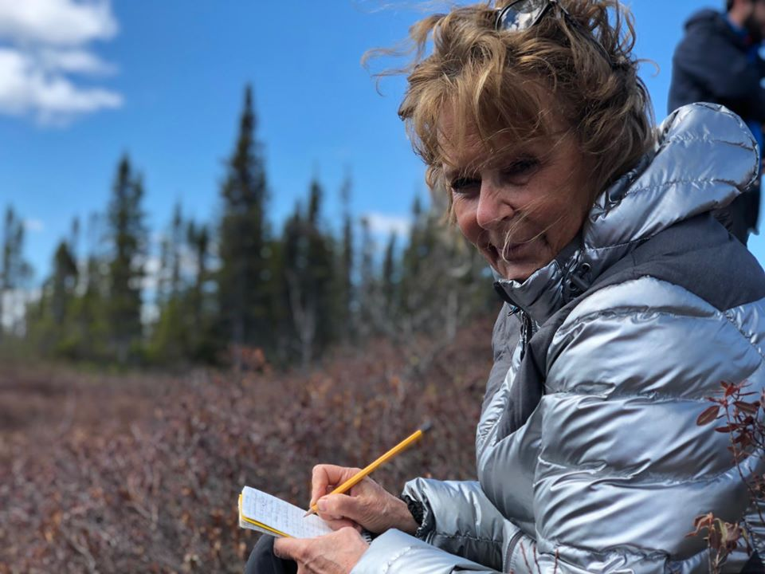
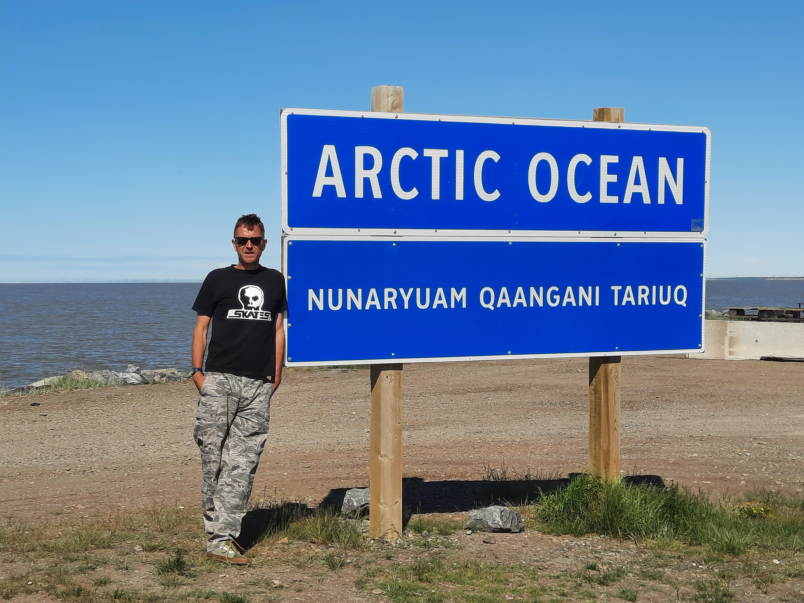
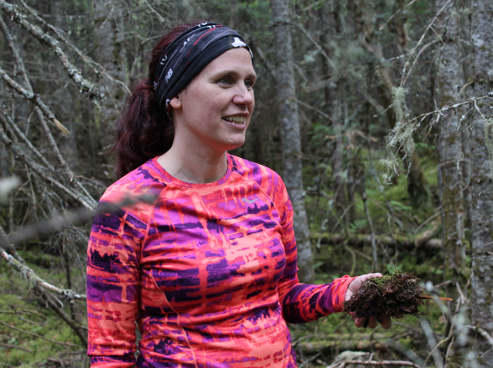

People
Principal Investigators

| Name | Dr. Michelle Garneau |
| garneau.michelle@uqam.ca |
Dr. Michelle Garneau initiated the project and built the strong collaborations with the Quebec government and the two other partners over the past year. Dr. Garneau is a Full Professor at the Université du Québec à Montréal (UQAM), where she has successfully led several research projects using innovative methods to document the impact of climate variations on C sequestration through time and space. The research carried out by her group over the past 25 years contributed to the development of the Act respecting the conservation of wetlands and bodies of water by recognizing the importance of the carbon sequestration function in wetlands and their conservation for climate change mitigation. She has been asked to lead the Quebec wetland research and climate mitigation program that has resulted in the present project.

| Name | Dr. Scott J. Davidson |
| davidson.scott_j@uqam.ca |
Dr. Scott J. Davidson is an Assistant Professor of Wetland Carbon Dynamics at the Université du Québec à Montréal (UQAM) and leads the Wetland Resilience Research Group. His research investigates how wetlands across Arctic, boreal, alpine, and temperate regions respond to climate change, land use, and disturbance, with a focus on carbon cycling and greenhouse gas emissions. Dr. Davidson’s work combines field measurements, remote sensing, and ecosystem modelling to understand the resilience of wetlands and their role in climate regulation. He has made key contributions to advancing knowledge of how wetland conservation and restoration support climate mitigation and has engaged in international efforts to build research networks and community science initiatives.
| Name | Dr. Sara Helen Knox |
| sara.knox@mcgill.ca |
Dr. Sara Knox is an Assistant Professor in Geography at McGill University (and formerly held a Canada Research Chair in Eco-Meteorology at UBC). Her research investigates how wetland-atmosphere exchanges of GHG, water and energy fluxes respond to a changing climate and disturbance, and how we can modify wetland management practices for climate change adaptation and mitigation. Dr. Knox has made several important contributions to understanding the climatic role of conserving and restoring wetlands across North America, with a focus on restored peatlands, wetlands in the Prairie Pothole Region of Canada, and tidal wetlands. Dr. Knox also co-led the international FLUXNET-CH4 initiative, which is a global database of eddy covariance CH4 flux measurements.

| Name | Dr. Oliver Sonnentag |
| oliver.sonnentag@umontreal.ca |
Dr. Oliver Sonnentag is an Assistant Professor and holds the Canada Research Chair in Atmospheric Biogeosciences in High Latitudes at the Université de Montréal. His research aims to understand changes in land surface-atmosphere interactions in response to increasing natural and anthropogenic pressures. He has established a transect of eddy covariance towers along a 2000-km permafrost and climate gradient across the boreal forest of northwestern Canada. He also uses remote sensing and modelling techniques to study changes in Arctic-boreal ecosystem composition, structure, and function. In addition, Sonnentag leads a training network to build local Indigenous capacity in the Northwest Territories for community-based monitoring of ecosystem changes, and is a co-investigator in NSERC CREATE LEAP, “training tomorrow’s LEAders in Permafrost thaw and northern research”.

| Name | Dr. Vincent Maire |
| Vincent.Maire@uqtr.ca |
Dr. Vincent Maire is a Professor in Environmental Sciences at the Université du Québec à Trois-Rivières (UQTR). He formerly held a Junior Research Chair at UQTR in arctic functional ecology, focusing on the feedbacks of arctic vegetation changes on the dynamics of permafrost and soil functioning, including CO2 and CH4 fluxes. His research focuses on how properties and changes of vegetation and microbial communities modify soil cycling of C and nitrogen in arctic, temperate, dryland and wetland ecosystems. Since 2019, he has been involved in the Pole d’Expertise du Lac Saint-Pierre, which evaluates the role of agricultural disturbances on the functioning of the Lac Saint-Pierre shoreline. As part of this, he determined how agricultural disturbances have modified the sequestration of biomass and C into soils and the fluxes of CO2 and CH4 to the atmosphere.

| Name | Dr. Alexandre Roy |
| Alexandre.Roy@uqtr.ca |
Dr. Alexandre Roy, is an Assistant Professor at Université du Québec à Trois-Rivières (UQTR) and UQTR Research Chair in Northern Remote Sensing. He has worked for more than twelve years in modeling and remote sensing of the cryosphere. Since 2014, in addition to a strong expertise in snow and freeze/thaw cycles monitoring, he has contributed to enhancing the understanding of the relationships between the cryosphere and C fluxes in high latitude environments. He works in close collaboration with various space agencies (NASA, Canadian Space Agency and European Space Agency) to improve surface key variables monitoring related to C fluxes such as soil moisture, soil temperature, surface freeze/thaw state and vegetation water content.

| Name | Dr. Marc-André Bourgault |
| Marc-Andre.Bourgault@ggr.ulaval.ca |
Dr. Marc-André Bourgault is an Assistant Professor in the Department of Geography at Laval University. His area of expertise is data analysis and numerical modelling of wetland hydrology. His research investigates the hydrological and biogeochemical interactions in wetlands as well as their capacity to reduce flood risk and accumulate C. He is also involved in different agro- and hydro-climatological projects in collaboration with a broad group of researchers in which he analyzes climate simulation data and develops new indicators to quantify the risk of climate change on various socio-economic sectors. He is in charge of of a research axis in Réseau inondations intersectoriel du Québec (RIISQ), an active collaborator in centrEAU, and a research member of Institut en environnement, développement et société (Institut EDS).

| Name | Dr. Paul A. del Giorgio |
| del_giorgio.paul@uqam.ca |
Dr. Paul A. del Giorgio is a Full Professor at Université du Québec à Montréal (UQAM). He is an aquatic ecologist and biogeochemist. Since 2009 he has held the NSERC – HydroQuébec Research Chair in Carbon Biogeochemistry in Boreal Aquatic Systems (CarBBAS Chair) and has led one of the largest studies to date of greenhouse gas and C dynamics in rivers and lakes in the remote, water-rich boreal biome of Canada. His integrative aquatic research in the boreal biome has contributed to a radical re-evaluation of aquatic / terrestrial links and of the role of inland waters, including hydroelectric reservoirs, in the global C cycle. He has a strong record of developing fruitful partnerships with industry and other stake holders, including Hydro Québec and the Cree Nation of Eeyou Ischee in the James Bay, among others.

| Name | Dr. Evelyne Thiffault |
| Evelyne.Thiffault@sbf.ulaval.ca |
Dr. Evelyne Thiffault is an Associate Professor in forest ecology and management at the department of wood and forest sciences at Université Laval and is a member of the Renewable Materials Research Centre. Her work focuses on land management and wood production for climate change mitigation. Her research program involves fundamental and applied studies of ecological processes related to C cycling between the ecosystems and the atmosphere as influenced by climate and forest management, along with work on the life-cycle of wood products and their role for meeting the needs of societies for materials and energy.
Technical and managerial team

| Name | Muhammad Umair |
| muhammad.umair.1@umontreal.ca |
Muhammad Umair is a data scientist for the CARBONIQUE project. Before starting this position, he was a postdoctoral fellow at Université de Montreal (UdeM, Atmosbios Lab), where his work involved implementing the “stomatal optimization based on xylem hydraulics” parameterization in CLASSIC (Canadian Land Surface Scheme including Biogeochemical Cycles) and to evaluate its impact on carbon and water fluxes for historical and future projections. During his postdoctoral fellowship, he worked closely with Oliver Sonnentag (research supervisor) and two other collaborators: Joe R. Melton from Environment and Climate Change Canada (ECCC) and Alexander Roy from UQTR on a project funded by the Canadian Space Agency (CSA). He has over five years of experience in climate modeling, remote sensing, and flux tower observations, and he also acquired teaching experience by working as an assistant professor in Pakistan before starting a postdoctoral fellowship in Canada. In addition, he has experience in using AI-ML tools in climate modeling. During his MS-Ph.D. in South Korea, he worked on the Community Land Model (CLM, Version 4.0 and 5.0) under the Community Earth System Modeling (CESM) framework and various remote sensing datasets (MODIS, SMAP).

| Name | David Trejo |
| trejo_cancino.david_ulises@uqam.ca |
As a Research Assistant at UQAM, David Trejo tackles vital tasks in the CARBONIQUE project. He contributes by installing, maintaining, and operating cutting-edge equipment to ensure accurate data collection. This role also involves calibrating scientific equipment and assisting with database maintenance, all to further our understanding of climate change.

| Name | Laurent Lessard |
| Laurent.Lessard2@uqtr.ca |
Laurent works as a research professional at UQTR and is in charge of fieldwork coordination. Over the years, he has acquired extensive experience in fieldwork in remote regions in an Arctic context. He also maintains flux towers in Nunavik and contributes to research projects in Nunavik, Nunavut, and Western Canada. As part of the CARBONIQUE project, Laurent contributes to the installation and maintenance of flux towers and their instruments, as well as to drone vegetation surveys.

| Name | Jean-Benoit Leblond Chouinard |
| jean-benoit.leblond-chouinard.1@ulaval.ca |
Jean-Benoit Leblond Chouinard works as a research assistant at Université Laval. In the context of the CARBONIQUE project, he is mainly in charge of installing and managing hydrological instruments. He also performs various data analysis and field-oriented tasks related to peatland hydrology.

| Name | Martina Schlaipfer |
| schlaipfer.martina@uqam.ca |
Martina Schlaipfer is the scientific coordinator for the CARBONIQUE project. Before moving to Canada, she worked in projects related to the GHG exchange of disturbed and rewetted agricultural peatland soils in Germany for a decade. She has experience with both eddy covariance and chamber flux measurements as well as project management. More recently, she was also involved in science communication for the Peatland Science Centre at the Weihenstephan-Triesdorf University of Applied Sciences (HSWT).
| Name | Léonie Perrier |
| perrier.leonie@uqam.ca |
Léonie Perrier manages field logistics, budgets, progress reports and provides student support for several research projects on carbon stock mapping, paleoecological reconstructions and carbon budgets in wetlands (Chaire de recherche québécoise portant sur l’étude du CARbone dans les milieux humides comme solution fondée sur la nature pour lutter contre le changement CLImatiQUE (CARCLIQUE)). CARBONIQUE is one of the many projects she contributes to.

| Name | Michaela de Melo |
| ladeira_de_melo.michaela@uqam.ca |
Michaela de Melo is a biologist and research assistant at the Carbon Biogeochemistry Laboratory in Boreal Aquatic systems (UQÀM, Prof. Paul del Giorgio). Before moving to Canada, she completed a master’s degree on the metabolism of large Amazonian rivers and a doctorate on the microbial ecology and dynamics of dissolved organic matter in floodplain lakes in the Brazilian Amazon. As a postdoctoral fellow, she studied hydrology and river exports in eastern James Bay using autonomous high-frequency measurements. Michaela collaborates on several projects on the biogeochemistry of reservoirs, lakes and rivers in various environmental contexts.
| Nom | Zoran Nesic |
| Courriel | zoran.nesic@ubc.ca |
Zoran Nesic is a senior research engineer at the University of British Columbia (UBS). He is responsible for management of numerous research and equipment design projects for various faculties and departments at UBC. He designs eddy covariance and soil respiration systems that are used at various North American universities as well as by other research institutions. His main research interests are (1) the design of automated measurement systems for long-term environmental measurements and (2) the standardization of measurement and data processing procedures to ensure high quality and reproducibility of research results.

| Nom | Olaf Kolle |
| Courriel | oeekolle@outlook.de |
Olaf Kolle contributes intermittently as invited senior scientist at UQAM to the CARBONIQUE project with his expertise in field experiments and instrumentation. His main tasks are to design and implement the eddy flux towers overall (structure, lightning protection, instrumentation, data acquisition, remote access, safety measures) together with the other team members, who all contribute with their respective skills and experience. He also imparts knowledge to the new generation of researchers and technical staff.
Students
- Joannie Beaulne (ULaval)
- (PhD Student)

- Joanie Boulard (UQAM)
- (M.Sc. Student)

- Didier Philippo (UQAM)
- (M.Sc. Student)
- Albert Chalifoux (ULaval)
- (M.Sc. Student)